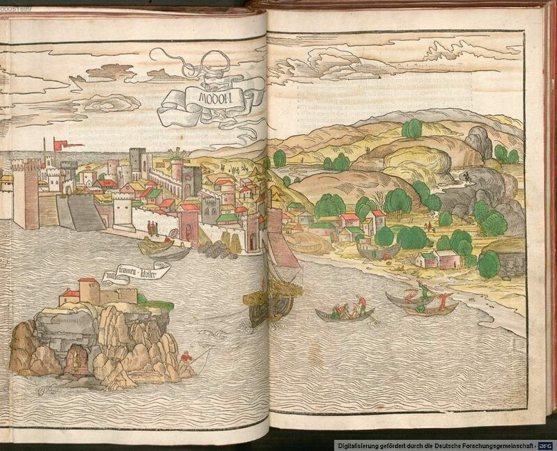
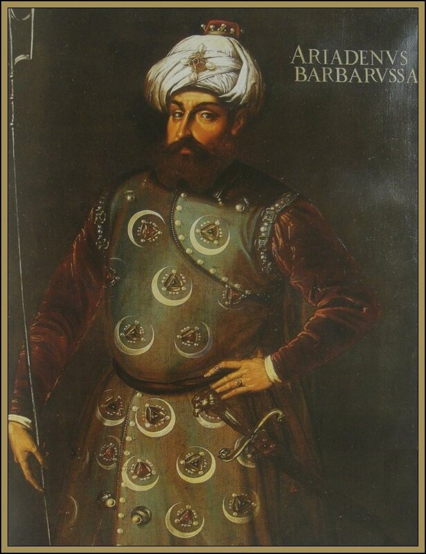

Не успев даже как следует закрепиться на Мальте и Гозо, рыцари ордена госпитальеров стали искать повод продемонстрировать свое горячее стремление отомстить туркам за поражение на Родосе и поскорее оставить в прошлом восемь лет вынужденного бездействия. В начале сентября 1531 года они нанесли неожиданный удар по юго-западной оконечности Пелопонесса, где находилась отвоеванная турками у венецианцев крепость Модон (нынешняя Метони).

Это вид Модона с гравюры голландского художника Э. ван Ревейка из Утрехта, который за полвека до описываемых событий совершил путешествие в Святую землю вместе с пребендарием Майнцского собора Бернхардом фон Брейденбахом. О путешествии последний оставил записки с приложением гравюр ван Ревейка, которые стали первым иллюстрированным описанием паломничества в Иерусалим и на Синай.
Рыцари сделали три приступа к укреплениям Модона, нанеся тяжелые потери его защитникам. Четыреста турок было убито. Но укрепленный замок Модона иоаннитам взять не удалось. Из-за неблагоприятного ветра корабли иоаннитов не смогли нанести удар по крепости одновременно, что дало возможность защитникам отбить их по очереди. Кроме того, плохая подготовка операции проявилась и в недостаточном разведывательном ее обеспечении. Сюрпризом для рыцарей оказалось присутствие поблизости большого турецкого соединения (6000 человек), которое и решило исход боя. Иоанниты погрузили на свои галеры 1600 пленных (в основном, женщин и детей) и вечером того же дня отошли к венецианскому острову Занте. Эта акция не заслужила одобрения даже у сторонников ордена, считавших, что разграбление крепости вместо ее захвата и удержания не прибавило иоаннитам славы.
Неудача под Модоном показала бесперспективность попыток быстрого возвращения рыцарей на Родос и они перешли к планомерному обустройству на Мальте. Второй вывод, который был сделан – о необходимости проведения тщательной разведки при любой операции на море.
Орден госпитальеров, стремясь отблагодарить Карла V за Мальту, в этот период принимал участие практически во всех военных предприятиях испанцев. Самым заметным из них стала война за Тунис.
Здесь мы сделаем небольшое обещанное отступление, касающееся Хайреддина Барбароссы.
Их было четверо, сыновей переселенца с Балкан на Лесбос гончара Якоба Рейса, перешедшего в ислам грека. Все они выбрали морское дело своим ремеслом. Один из братьев погиб в морском бою с европейцами. Второй, прозванный за огромную рыжую бороду Уруджи, рыжебородый, участвовал в выдворении испанцев из Туниса и гнал их до самых Балеарских островов. В боях он потерял руку, а затем весной 1518 года и жизнь. Его сменил брат Азор, будущий капудан-паша – адмирал – турецкого флота, который унаследовав не только корабли, но и прозвище Уруджи – Рыжебородый, которое в европейских источниках впоследствии стало Барбароссой. Флотилия продолжила пиратский промысел под командованием нового капитана.

В те времена использовать пиратов на государственной службе не считалось зазорным. Султан Селим, стремясь обеспечить морской фланг во время завоевания Египта, пригласил Барбароссу на службу, выдал ему штандарт бейлербея с конским хвостом, коня и ятаган, а также 2000 янычар и батарею осадных орудий. В 1519 году Барбароссе удалось отстоять Алжир от наседающих испанцев, однако измена местных феодалов вынудила будущего адмирала переместиться из Алжира на небольшой остров Джерба. С этого плацдарма он развернул планомерные действия по возвращению Алжира, что ему и удалось в 1525 году. Алжир стал центром мусульманского пиратства на Средиземном море. Вместе с Барбароссой действовали еврей из Смирны Синан и египетский араб Салих Раис. В попытке искоренить пиратство испанцы посылали одну экспедицию за другой, но все они терпели неудачу, пополняя флот Барбароссы новыми кораблями и гребцами для галер. Положение стало критическим и Карл V обратился к знаменитому генуэзскому адмиралу Андреа Дориа с поручением изгнать Барбароссу с его баз на североафриканском побережье.
Как раз в это время султан Сулейман по совету своего главного визиря решил назначить Барбароссу командующим своим флотом и с этой целью пригласил его в Стамбул. Во главе отряда из восемнадцати галер Барбаросса направился в столицу Османской империи, осознавая, что без поддержки османов ему не выстоять в борьбе против Карла. По пути он разграбил несколько селений на испанском острове Эльба и перехватил конвой генуэзских транспортных судов, груженых зерном.
После встречи с Барбароссой Сулейман некоторое время сомневался в целесообразности назначения сына христианского гончара на ответственный пост в имперской иерархии. Сомнения высказывали и члены Дивана. Чтобы разрешить эти сомнения, Сулейман направил Барбароссу в Азию, где в это время находился главный визирь. Ибрагим-паша одобрил выбор султана: «Это тот человек, что нам нужен, — написал он султану. — Он смел и осмотрителен, способен предвосхищать ход боя, неутомим в работе, стоек при столкновении с бедой». Султан имел и другие причины для вручения руководства своим флотом Барбароссе. Он планировал активные действия в Азии и ему нужен был человек, способный сковать силы Карла V на этот период.
Хайреддин (именно такое мусульманское имя дал Барбароссе султан) создал практически новый флот Османской империи. Получив в свое распоряжение Галлиполийский Арсенал, Барбаросса довел корабельный состав военного флота до 84 единиц, оснастил корабли экипажами и приступил к интенсивной подготовке новых моряков. Опасаясь, что бывший пират не удержится от соблазна использовать корабли нового флота для разбойничьих набегов, султан взял с Барбароссы слово не выходить в море иначе как во главе всего имперского флота. А перед флотом были поставлены сложнейшие задачи: захватить все европейские порты на побережье Северной Африки; захватить все острова Средиземного моря, которые могут быть использованы Андреа Дориа в качестве военно-морских баз или пунктов базирования для своего флота; установить морскую блокаду Испании со стороны Средиземноморья; на каждый рейд европейцев на африканское побережье отвечать адекватным рейдом на берега Европы. Препятствием и основным противником при решении этих задач для Барбароссы были корабли папского флота, Неаполя и Генуи, галеры рыцарей Мальтийского ордена и корабли португальцев. Естественно, угрожали ему и военно-морские силы Священной Римской империи. Т.е., из всех европейских средиземноморских держав только Венеция оставалась нейтральной благодаря договору о дружбе и нейтралитете, да Франция во главе с Франциском не спешила открывать фронт борьбы против османов.